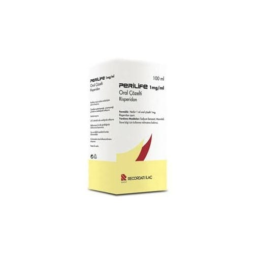

Perilife 1 mg/ml Oral Çözelti

Ne için kullanılır
KT · Bölüm 1• PERİLİFE®etkin madde olarak her 1 ml oral çözeltide 1 mg risperidon içerir. • PERİLİFE®berrak, renksiz çözeltidir. Çocuk korumalı plastik kapak ile miligram ve mililitre olarak derecelenmiş, minimum 0.25 ml ve maksimum 3 ml hacimde, 3 ml pipetli, 100 ml’lik amber renkli cam şişede, hasta kullanma talimatını da içeren karton kutuda sunulmaktadır. • PERİLİFE®antipsikotikler olarak adlandırılan ve bir çeşit ruhsal bozukluk (psikoz) durumunda kullanılan ilaç grubuna dahildir.
• PERİLİFE®aşağıdaki durumların tedavisinde kullanılmaktadır.
• Halüsinasyon (olmayan bir şeyi görmek, işitmek veya hissetmek), kuruntu, zihin karışıklığı, saldırganlık, aşırı şüphecilik (paranoya), duygusal ve sosyal çekingenlik gibi düşünce, duygu ve/veya davranışlarınızı etkileyen durumların tedavisinde kullanılır, PERİLİFE®, ayrıca bu durumdaki kişilerin hissettiği ruhsal çöküntü, suçluluk duygusu, endişe ve gerginlik gibi belirtileri azaltır. • Bozulan ruhsal durumun dengelenmesi için kullanılır [ani gelişen ve uzun süreli rahatsızlıklarda; bipolar bozuklukta (ruhsal durumdaki zıt yönlü değişiklikler) gözlenen taşkınlık nöbeti belirtilerinin kontrol altına alınmasında; agresif veya diğer yıkıcı davranışların ön planda olduğu davranış ve diğer yıkıcı davranış bozukluklarının tedavisinde; çocuklarda ve ergenlerde otistik bozukluğa bağlı huzursuzlukların (agresif belirtiler, kendine zarar verme, öfke nöbetleri, ani duygu durum değişiklikleri) tedavisinde].